10. ワークフロー¶
10.1. 決裁する¶
決裁を行いましょう。申請から承認、申請内容によっては社内使用の雛型･個人使用の雛型を作成することもできます。
10.1.1. 申請する¶
メニューの 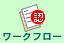 をクリックします。
新規作成 をクリックします。
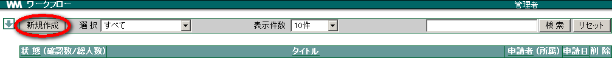
各項目を入力し、 OK をクリックします。
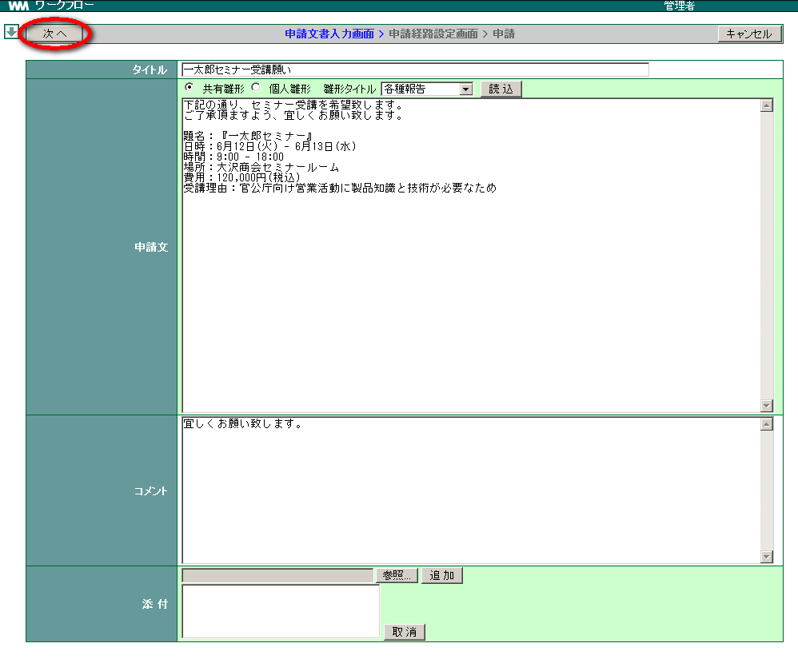
Note
見積書等添付したい場合、 参照 をクリックでファイル名を指定し、 追加 をクリックします。
決裁を承認するユーザーを「ユーザー一覧」から選択し、 追加→ をクリックします。

「優先順序」を整え、 OK をクリックします。
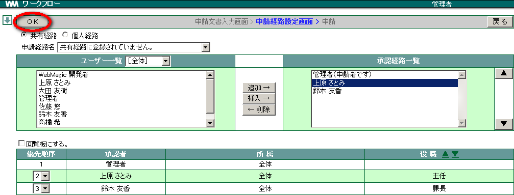
登録確認画面が表示されます。 OK をクリックします。
<申請ステータス>
状態 内容 申請中 「承認」をクリックしていないユーザーがいる場合 完 了 ユーザー全員が「承認」をクリックした場合 否 認 ユーザーが一人でも「否認」をクリックした場合
10.1.2. 既存のワークフローの内容をコピーして申請する¶
既存のワークフローの内容を元に、新規で申請を作成する場合にはコピー機能が利用できます。
コピー元のワークフローの詳細表示中に コピー をクリックします。
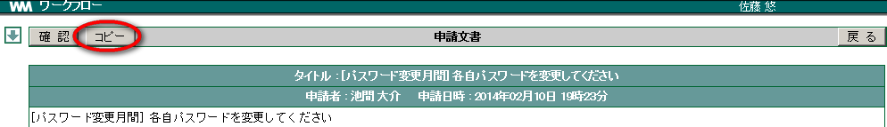
タイトル、申請文などの内容や申請経路が引き継がれた状態で新規作成画面が表示されます。
[申請文書入力画面]
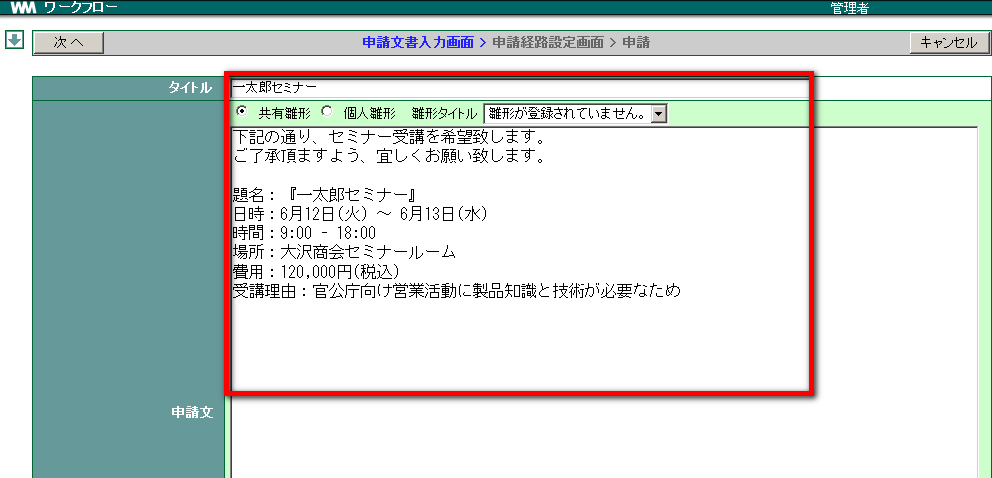
[申請経路設定画面]

10.1.3. 雛形を使って申請する¶
メニューの をクリックします。
新規作成 をクリックします。
「共有雛形」「個人雛形」のどちらかを選択し、雛形名を選択して 読込 をクリックします。タイトルは自動的に入力されます。
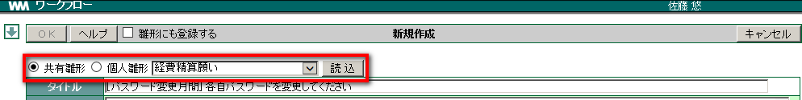
雛形の文章が読み込まれます。

文章を編集し、 OK をクリックします。
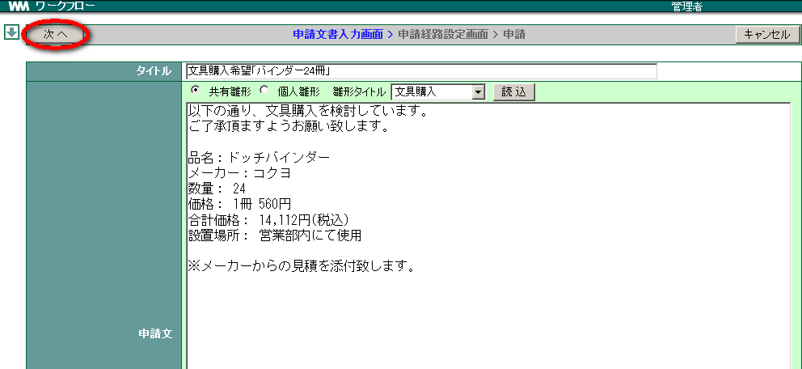
Note
ファイルを添付したい場合、 参照 をクリックしファイル名を指定、 追加 をクリックします。
決裁を承認するユーザーを「ユーザー一覧」から選択し、 追加→ をクリックします。
「優先順序」を整え、 OK をクリックします。
10.2. 回覧する¶
メニューの をクリックします。
新規作成 をクリックします。
各項目を入力し、 OK をクリックします。
Note
見積書等を添付したい場合、 参照 をクリックしファイル名を指定し 追加 をクリックします。
回覧するユーザーを「ユーザー一覧」から選択し 追加→ をクリックします。
「回覧する」にチェックを入れ、 OK をクリックします。

登録の確認画面が表示されますので OK をクリックします。
<回覧ステータス>
状態 内容 回覧中 「確認」をクリックしていないユーザーがいる場合 回覧終了 ユーザー全員が「確認」をクリックした場合
10.3. ワークフローを削除する¶
ワークフローを削除しましょう。申請・回覧した本人または管理者のみが削除できます。
メニューの をクリックします。
削除したいワークフローの「削除」をクリックします。
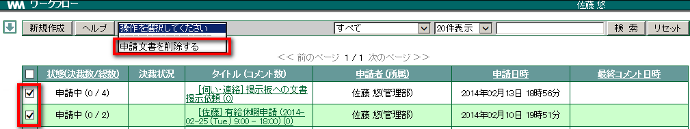
確認メッセージが表示されたら、 OK をクリックします。
10.4. 申請を承認（否認）する¶
メニューの をクリックします。
「(未決)」と記載されたワークフローの タイトル をクリックします。

申請内容を確認し、 承認 または 否認 をクリックします。
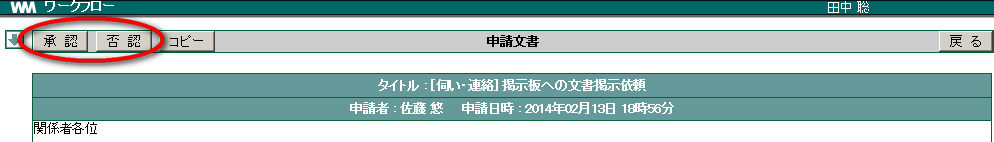
Note
コメントを添えたい場合、「コメント」欄に文字を入力します。
- 承認・否認 の確認ボタンが表示されますので、 OK をクリックします。
10.4.1. 否認した申請を承認する¶
否認した申請を承認し直すことが可能です。
否認した申請の タイトル をクリックします。

否認したコメントが引用された状態で申請の詳細が表示されます。
承認し直す場合は、 承認 をクリックします。
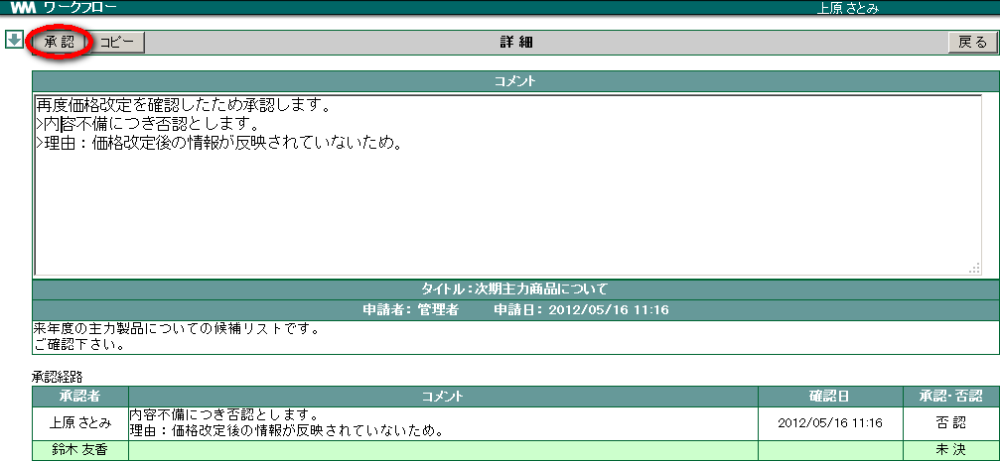
否認を取り消して承認してもよいか確認されますので、承認でよければ OK をクリックします。
10.5. ワークフローを検索する¶
「申請者」「タイトル」「本文」に含まれる文字列から、検索することができます。
メニューの をクリックします。
キーワードを入力し、 検索 をクリックします。
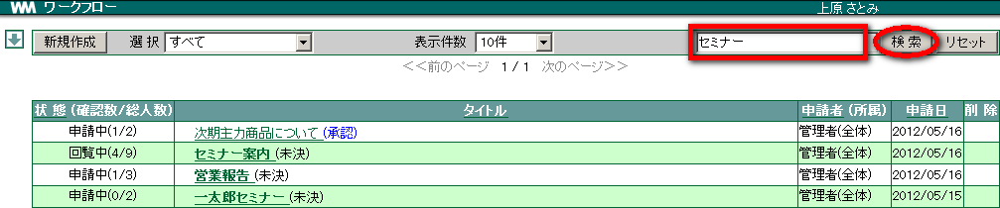
該当するワークフローのみが表示されます。検索した文字列が点滅します。

10.5.2. 状態で絞り込む¶
ワークフローを申請されている状態で絞り込むことができます。
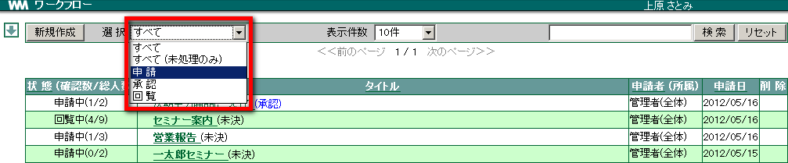
<絞り込み一覧>
| 状態 | 内容 |
|---|---|
| すべて | すべてのワークフローを表示 |
| すべて(未処理のみ) | すべてのワークフローで未処理のものを表示 |
| 申請 | 自分が申請して「申請中」「完了」「否認」のものを表示 |
| 承認 | 自分または他のユーザーが申請して自分が「承認」にしたワークフローを表示 |
| 回覧 | 自分または他のユーザーが申請して「回覧中」「回覧終了」の状態のワークフローを表示 |
脚注
| [1] | 「共有雛形」の登録は、管理者のみしかできません。 |
| [2] | 「個人雛形」の登録については 設定画面(個人) の ワークフロー をご確認ください。 |
| [3] | 「個人経路」の登録については 設定画面(個人) の ワークフロー をご確認ください。 |
| [4] | 「メールでのお知らせ」の設定については 設定画面(個人) の 個人情報 をご確認ください。 |